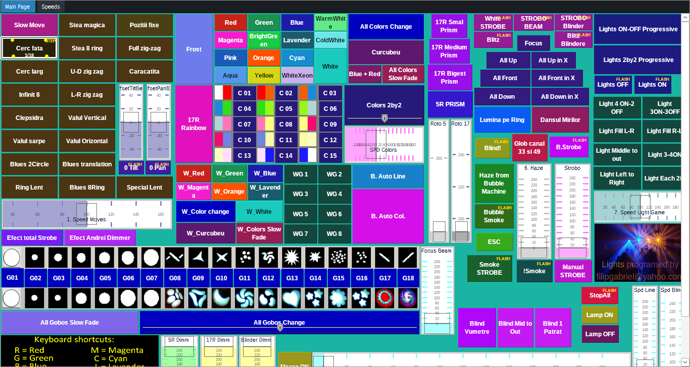

For: FullPlayer
Lock Live-panel (on the function bar) hides every bar and tool of the window and shows the Live panel on the whole screen: only the tabs of the pages and the panel stay - for the show, so that nothing else can be touched by mistake.

Andrei_edit locked: the pages Main Page and Speeds and the panel, nothing else.
lockLivePanel and unlockLivePanel do the same, from a button, a macro or
the Command Line.